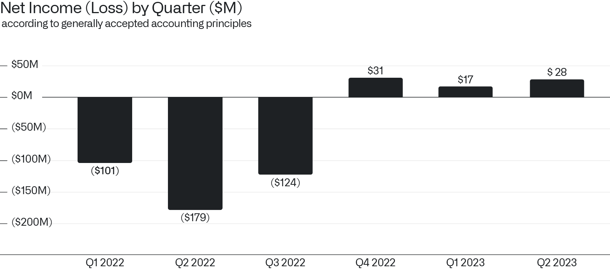
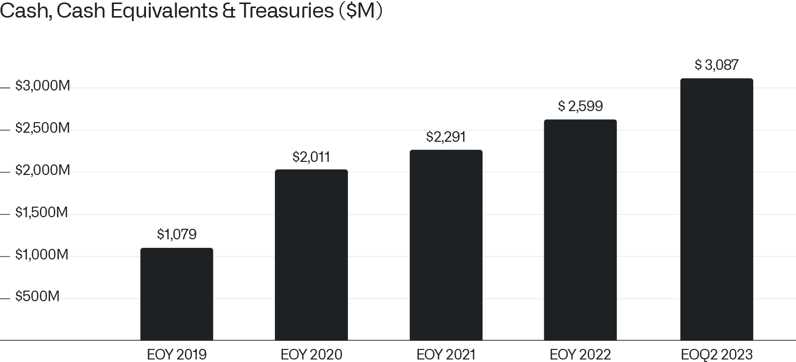

致股东信
2023年8月7日

一、
我们面临的机遇之大，前所未有。
不到三个月前，我们宣布推出人工智能平台（AIP），该平台允许大语言模型在企业边界内和私有数据上运行。
该平台已经在超过一百个组织中拥有用户，包括来自医疗、金融、汽车和能源领域的一些全球最大企业。
从美国到世界各地，各机构正竞相部署软件解决方案，力图驯化那些此前主要在开放互联网荒野中运行的大语言模型。
然而，无论是从技术还是数据治理的角度来看，构建将语言模型整合进庞大组织运作所需的架构，其准入门槛远超许多人的预期。
因此，市场对 AIP 的需求是我们过去二十年来所未见的。我们目前正与另外三百多家企业商讨在其组织内部署 AIP，它们都在寻找一种安全有效的方式，以便将最新的大语言模型应用于内部系统和专有数据。
我们打造了他们所需的集成平台，在发布仅数月后，我们所看到的市场牵引力已经彻底改变了我们的公司。
二、
第二季度的总收入增长至 5.33 亿美元。
我们还实现了连续第三个季度的盈利，在持续稳健盈利的道路上不断迈进。
按照美国通用会计准则，2023 年第二季度我们创造了 2800 万美元的净收入。

我们连续第二个季度实现营业利润，运营收入增长至 1000 万美元。此外，我们的经营性现金流达到 9000 万美元，标志着连续第十个季度实现正向现金流。
我们预计今年将在季度和全年基础上保持盈利。因此，我们预期在 11 月初公布 2023 年第三季度财务业绩后，将有资格被纳入标普 500 指数。届时，我们在过去四个季度的累计利润将为正。
三、
截至 2023 年 6 月 30 日，我们拥有 31 亿美元的现金及现金等价物。
随着我们的业务在快速扩张的市场中不断提升份额，这些储备多年来不断增长。仅今年上半年，我们就创造了 2.5 亿美元的盈余现金。

实力带来自由。
我们的董事会已批准一项普通股回购计划，这是我们作为上市公司的首次。该计划授权回购高达 10 亿美元的公司 A 类普通股。
近几个月来，前方的机遇规模显著增加。我们决心将其收入囊中。
诚挚地，

Alexander C. Karp
首席执行官兼联合创始人
Palantir Technologies Inc.
前瞻性声明
本信包含属于 1995 年《私人证券诉讼改革法案》“安全港”条款定义内的“前瞻性声明”，包括但不限于关于我们的财务展望、产品开发及相关时间表、分销和定价、软件平台的预期收益与应用、业务战略和计划（包括与人工智能平台“ AIP ”相关的战略和计划、销售与营销工作、销售团队、合作伙伴关系和客户）、业务投资、市场趋势和市场规模、机遇（包括增长机遇）、我们对各种实体现有和潜在投资及商业合同的预期、我们对宏观经济事件的预期、我们对潜在资格或被纳入市场指数的预期、我们对股票回购计划的预期以及市场定位的声明。这些前瞻性声明自首次发布之日起作出，基于当前的预期、估计、预测以及管理层的信念和假设。诸如“指引”、“预期”、“预计”、“应该”、“相信”、“希望”、“目标”、“预测”、“计划”、“目标”、“估计”、“潜在”、“推测”、“可能”、“将”、“也许”、“可以”、“打算”、“应”等词汇，以及这些术语的变体或否定形式及类似表达，旨在识别这些前瞻性声明。前瞻性声明受制于诸多风险和不确定性，其中许多涉及我们无法控制的因素或情况。由于多种因素，我们的实际结果可能与前瞻性声明中所述或暗示的结果存在重大差异，这些因素包括但不限于我们向美国证券交易委员会（简称“SEC”）提交文件中详述的风险，包括截至 2022 年 12 月 31 日财年的 10-K 表年度报告，以及我们可能不时向 SEC 提交的其他文件和报告，包括提供截至 2023 年 6 月 30 日财季收益新闻稿的 8-K 表最新报告，以及截至 2023 年 6 月 30 日财季的 10-Q 表季度报告。特别是，以下因素等可能导致我们的结果与此类前瞻性声明所表达或暗示的结果存在重大差异：我们成功执行业务和增长战略的能力；我们的现金及现金等价物满足流动性需求的充分性；市场对我们平台、产品和服务的整体需求；我们增加新客户数量及从客户处创造收入的能力；我们将客户合同的部分或全部合同价值确认为收入的能力，包括客户可用的任何合同选择权或受便利终止条款约束的合同期限；我们漫长且不可预测的销售周期；我们与第三方成功执行渠道销售和其他战略举措的能力；我们保留和扩大客户群的能力；我们的运营结果和关键业务指标在未来期间季度性的波动；我们业务的季节性；我们平台实施过程的复杂性和漫长性；我们成功开发和部署新技术以满足现有或潜在客户需求的能力；我们使平台和产品更易于安装、消费和使用的能力；我们维护和提升品牌和声誉的能力；随着业务增长以及追求业务和财务目标，我们维护和提升企业文化的能力；关于我们的新闻或社交媒体报道，包括但不限于呈现或依赖不准确、具有误导性、不完整或其他破坏性信息的报道；近期或未来的全球宏观经济和地缘政治事件对我们公司或现有或潜在客户和合作伙伴的业务和运营的影响，如持续的俄乌冲突、美国及其他国家通胀和利率上升、货币政策变化、金融服务业动荡以及外汇波动；在我们的平台中使用人工智能引发的问题；以及任何对我们或客户或第三方数据的泄露或访问。
本信中包含的前瞻性声明代表我们在本信发布之日的观点。我们预计后续事件和发展将导致我们的观点发生变化。我们不承担任何更新或修订任何前瞻性声明的意图或义务，无论是由于新信息、未来事件或其他原因。这些前瞻性声明不应被视为代表我们在本信日期之后任何日期的观点。过往业绩并不必然代表未来的结果。
其他说明
本信可能包含基于独立行业出版物或其他公开信息的统计数据、估计、预测和声明，以及基于我们内部来源的其他信息。这些信息涉及许多假设和限制，特此提醒您不要对这些估计赋予不当权重。我们未独立核实这些行业出版物和其他公开信息中包含的数据的准确性或完整性。因此，我们不对该等数据的准确性或完整性作出任何陈述，亦不承担在本信日期之后更新该等数据的义务。
在讨论我们的业务时，本信可能提及各种增长率。除非另有说明，这些增长率反映的是同比比较。
收到本信即表示您承认，您将自行负责对市场及我们的市场地位进行评估，并将自行进行分析，且全权负责对所提供信息形成自己的看法，包括关于我们业务潜在未来表现的信息。